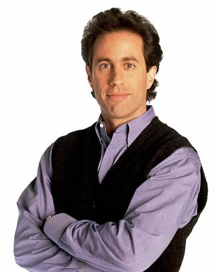

About Jerry Seinfeld
Jerry Seinfeld is the title character and the main protagonist of the American television sitcom Seinfeld (1989–1998). The straight man among his group of friends, this semi-fictionalized version of comedian Jerry Seinfeld was named after, co-created by, based on, and played by Seinfeld himself. The series revolves around Jerry's misadventures with his best friend George Costanza, neighbor Cosmo Kramer, and ex-girlfriend Elaine Benes. He is usually the voice of reason amid his friends' antics and the focal point of the relationship.
In contrast to the series' supporting characters, he rarely runs into major personal problems. Jerry is the only main character on the show to maintain the same career (a stand-up comedian, like the real Seinfeld) throughout the series. He is the most observational character, sarcastically commenting on his friends' quirky habits. Much of the show's action takes place in Jerry's apartment located in New York City at 129 West 81st Street, apartment 5A. He and his friends also frequently have coffee or meals together at Monk's Café.
Famous Jerry Quotes
- Hello, Newman
- Oh, that's a shame
- But I don't want to be a priate!